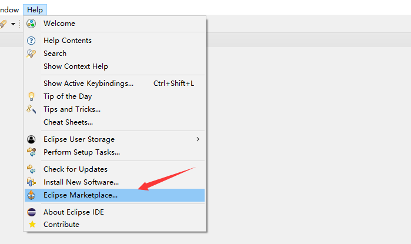
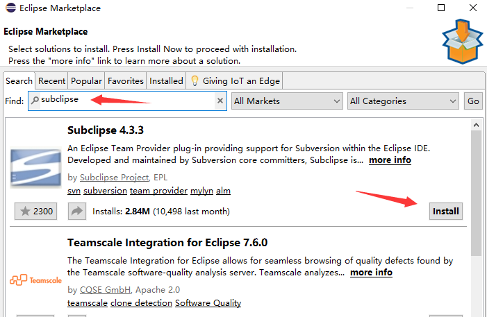
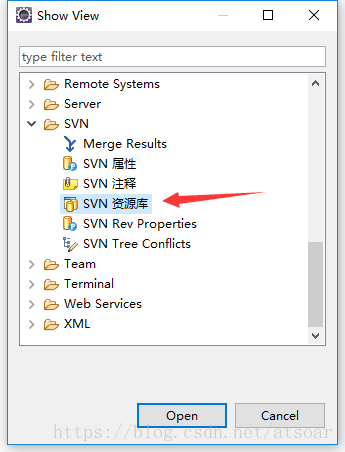
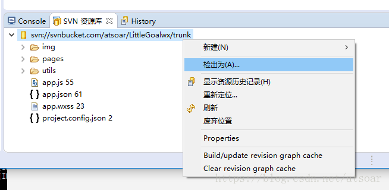
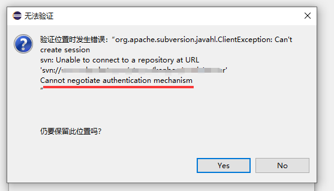

Subclipse 是 Eclipse 上的一个 SVN 插件，方便用户直接在 Eclipse 里面使用 SVN 功能
下面我们讲解如何安装 Subclipse 和使用它检出代码
打开 Eclipse 的应用市场

搜索 subclipse

安装

把SVN插件显示出来，选择Other

选择SVN资源库

点击添加仓库地址

现在我们就可以在插件界面看到我们的仓库内容了，右键就可以检出代码了

常见问题
如果使用中遇到如下错误

在 Eclipse->window->preference->team->svn 中将 svn 接口设定为 svnkit。